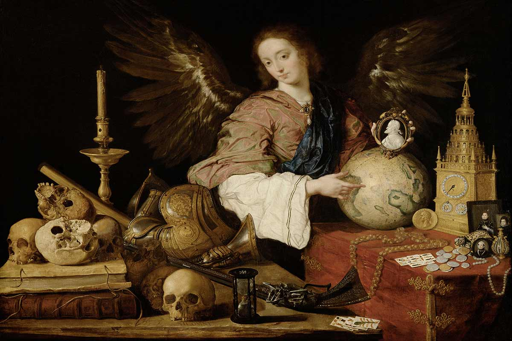
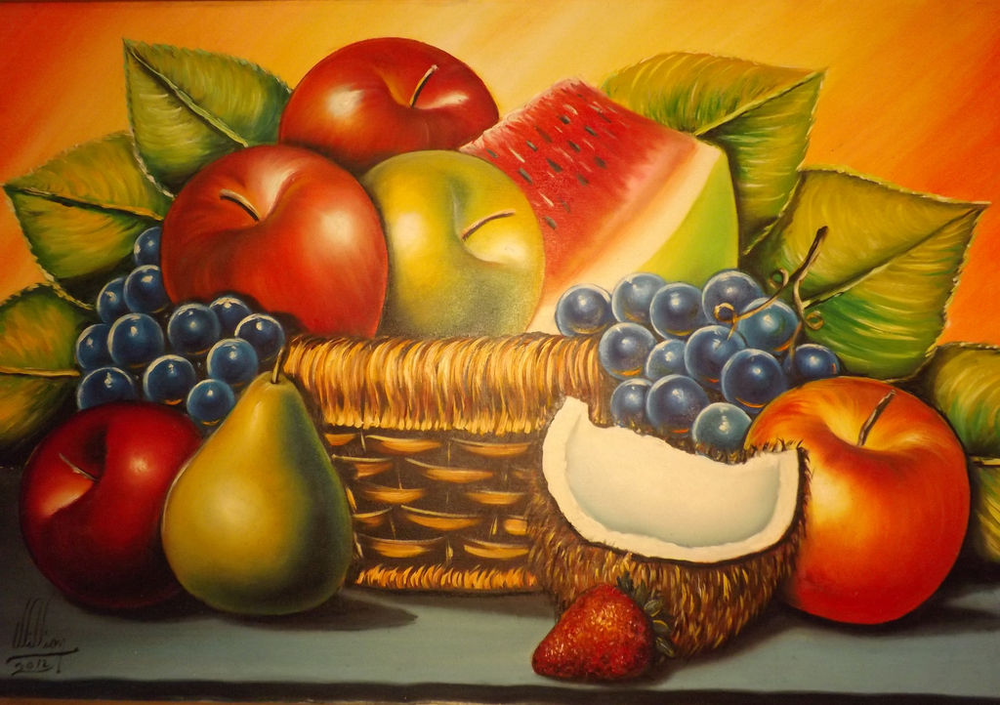
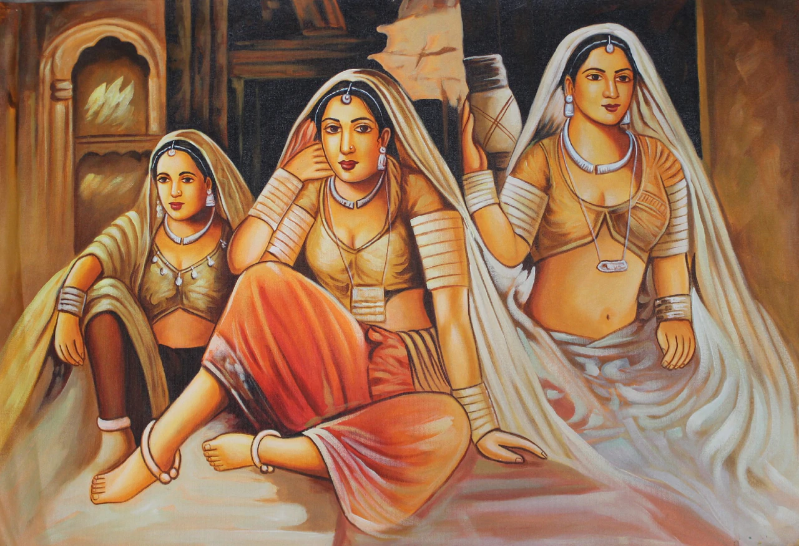
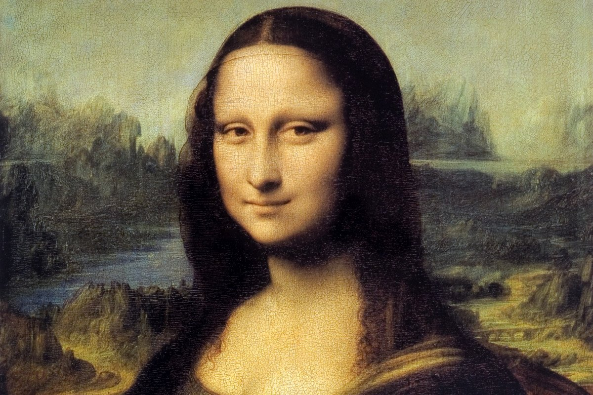
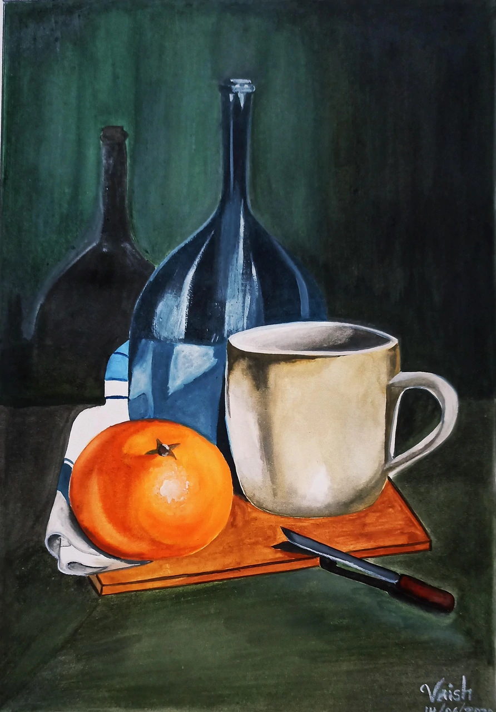

Badegon
In Spanish art, a bodegón is a still life painting depicting pantry items, such as victuals, game, and drink, often arranged on a simple stone slab, and also a painting with one or more figures, but significant still life elements, typically set in a kitchen or tavern.

Figure
A figure painting is a work of art in any of the painting media with the primary subject being the human figure, whether clothed or nude. Figure painting may also refer to the activity of creating such a work.

Illustration
Illustration paintings are those used as illustrations in books, magazines, and theater or movie posters and comic books. Today, there is a growing interest in collecting and admiring the original artwork.

Landscape
Landscape painting is a term that covers the depiction of natural scenery such as mountains, valleys, trees, rivers, and forests, and especially art where the main subject is a wide view, with its elements arranged into a coherent composition.

Portrait
Portrait paintings are representations of a person, in which the face and its expression is predominant. The intent is to display the likeness, personality, and even the mood of the person.
